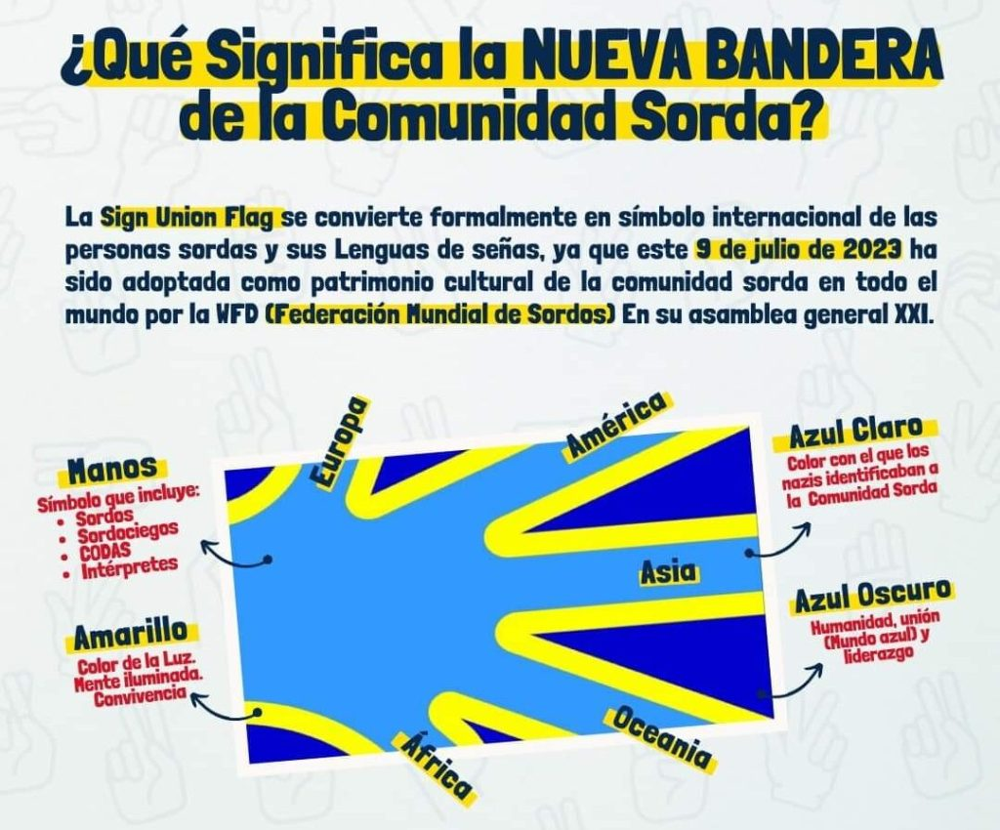
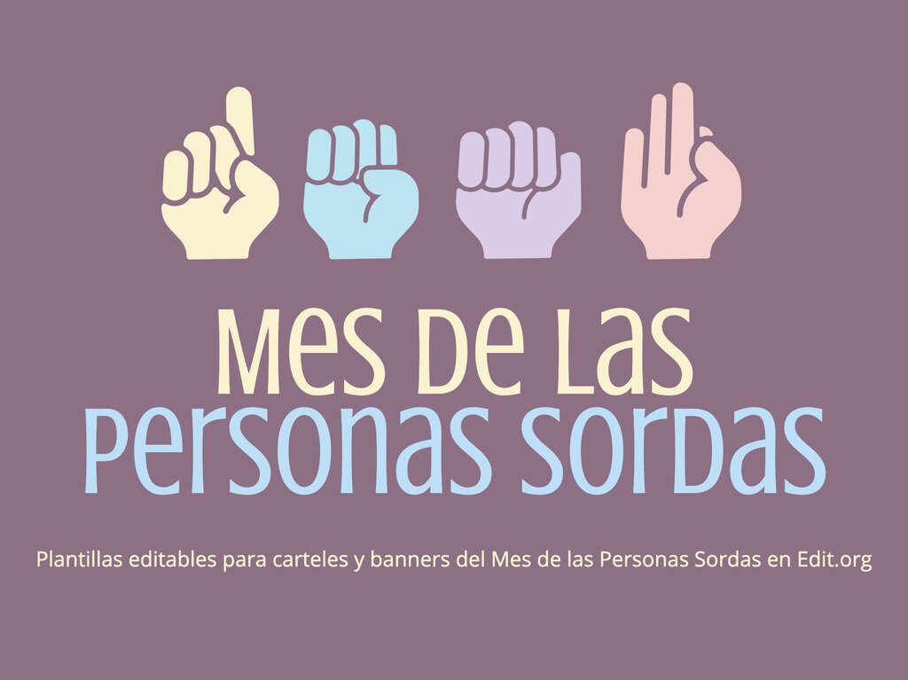

Bandera de la comunidad sorda
El diseño de la bandera de la comunidad sorda es un rectángulo de color azul marino con una gran mano abierta de color turquesa sobre otra mano de color amarillo (de la que sólo se ve el perfil alrededor de la mano de color turquesa). Las puntas de los dedos quedan fuera de la bandera, de forma que los dedos se “extienden” sin límite.
La bandera de la comunidad sorda fue diseñada por el artista sordociego francés Arnaud Balard. Balard pasó dos años estudiando las diferentes banderas existentes, y aprendiendo vexilología.La bandera fue presentada por primera vez en 2013, y fue rápidamente adoptada por la comunidad sorda de todo el mundo. En 2014, la Federación Nacional de Sordos de Francia (FNSF) reconoció y aprobó la bandera diseñada por Balard.
En la imagen podemos observar el significado completo de la comunidad bandera. La bandera de la comunidad sorda es un símbolo de orgullo, unidad y diversidad para las personas sordas de todo el mundo. Es un símbolo que representa a la comunidad sorda como una comunidad orgullosa y perseverante que ha luchado por sus derechos durante mucho tiempo. Representa la comunidad sorda como una comunidad unida y diversa. Los colores y el diseño de la bandera representan a la comunidad sorda en su conjunto, incluyendo a las personas sordas de todo el mundo, con diferentes lenguas de señas y culturas. Es un símbolo de orgullo y pertenencia. La bandera es un recordatorio de la historia y los logros de la comunidad sorda, y un símbolo de orgullo para las personas sordas de todo el mundo. Ayuda a visibilizar a la comunidad sorda. La bandera ayuda a que la comunidad sorda sea más visible en la sociedad, y a promover la concienciación sobre los derechos de las personas sordas.

Los colores de la bandera de la comunidad sorda tienen un significado simbólico importante. Las manos representan a la comunidad sorda signante y a la lengua de signos. Los dedos sin límites hacen alusión a la proyección del uso de la lengua de señas en el mundo, siendo más de 200 lenguas de señas existentes. Los dedos también simbolizan la conexión con los 5 continentes (por orden de arriba hacia abajo): Europa, América, Asia, Oceanía y África. El color turquesa es el color mundial de la lengua de signos, de la cultura sorda, y de la comunidad sorda señante (sordos, sordociegos, hijos oyentes de padres sordos, intérpretes de lengua de señas, familiares). El color amarillo simboliza la luz, la vida, la mente despierta, la convivencia. El color azul marino (azul oscuro) simboliza el planeta Tierra, la humanidad, y es el color adoptado para representar a la comunidad sorda (representada por un lazo azul). De esta forma se incluiría a los sordos y sordociegos no-señantes(oralistas).

Día Nacional de las Personas Sordas: 28 de noviembre
Todos los años desde 1958, se celebra en el mundo la Semana Internacional de las Personas Sordas durante la última semana del mes de septiembre, del 23 de Septiembre al 29 de Septiembre y cada año el último sábado de septiembre el 28 de Septiembre las personas sordas de todo el mundo celebran su día.
Por último, la Organización Mundial de la Salud (OMS), también ha sabido aprovechar la Semana Internacional de las Personas Sordas, para concienciar a la sociedad civil sobre la hipoacusia, un trastorno auditivo que afecta a cinco de cada mil niños en el mundo. La hipoacusia leve, puede ser corregida si se diagnostica durante los primeros meses de vida del infante, ya que es durante los primeros tres meses de nacido que se terminan de desarrollar los conductos auditivos de los seres humanos, así que durante este periodo se puede realizar una intervención quirúrgica para subsanar el problema, con una posterior rehabilitación.
¿Cómo celebrar la Semana Internacional de las Personas Sordas?
La mejor manera de celebrarlo es sumarte a las actividades que realizan muchísimas organizaciones sin fines de lucro a lo largo del mundo, donde no solo se promueve la inclusión de personas sordas y sordomudas, sino que también se crea un ambiente en el que los interesados puedan aprender lengua de señas, interactuar con niños y jóvenes sordos y aprender sobre la realidad que viven estas personas en su día a día, para brindar respuestas que realmente beneficien su calidad de vida y les permita integrarse dentro de la sociedad sin ningún tipo de limitación más allá de su propia condición o trastorno auditivo.
Datos Importantes:
La cultura sorda esta protegida por las naciones unidas, no se asocia a una discapacidad, sino a la lengua de signos y a la experiencia visual del mundo.
La comunidad sorda se considera una cultura etnica, ya que cumple con todos los criterios establecidos por los cientificos sociales: nombre colectivo, normas, valores,etc.
La fama del aplauso silencioso, agitando las manos en el aire. El publico conocedor de Beethoven y que no podia oir los aplausos comenzo a agitar las manos en el aire.
El humor puede ser diferente, existen chistes dentro de la cultura sorda que se transmiten de generación en generación, que solo son comprendidos si son parte de la comunidad.
A continuación, se presentarán datos importantes sobre las personas sordas, una comunidad que enfrenta desafíos únicos en su día a día pero también aporta una perspectiva valiosa a nuestra sociedad. Comprender sus experiencias, su cultura y la riqueza de la lengua de señas es fundamental para promover un entorno inclusivo. Al aprender sobre su realidad, podemos desarrollar empatía, derribar barreras de comunicación y contribuir a la construcción de una sociedad más equitativa, donde el respeto mutuo sea el pilar de nuestras relaciones. Reconocer y valorar su identidad no solo enriquece nuestra convivencia, sino que también abre las puertas a un mundo más accesible para todos.
Serian el tercer pais mas poblado del mundo, hay 360 millones de personas con sordera en el mundo, por lo que si estuvieran todos juntos serian el tercer pais mas poblado.
Nacen de familias oyentes, entre el 50% y el 95% de los niños sordos nacen de parejas oyentes, lo cual escandaliza a algunas personas oyentes.
Tienen mejor visión periferica, los estudios muestran que las personas sordas alcanzan en la adolescencia los niveles de visión periferica de una persona adulta y se mantienen superiores.
Son mejores conductores, las estadicticas indican que son tan buneos o mejores conductores que las personas oyentes, en estados unidos incluso pueden conducir vehiculos comerciales pesados desde 2013.